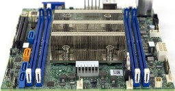
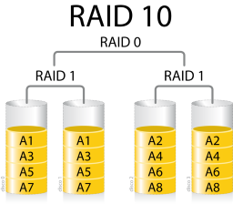
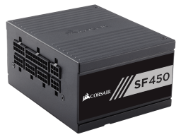
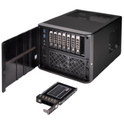
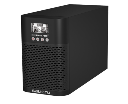

Construyendo un servidor#
Placa Base#
La placa base es una de las partes fundamentales entre otras cosas porque es lo que interconectará todo y además nos dimensionará el tamaño del servidor o pc que vayamos a montar. y a partir de esta podremos elegir el resto de componentes.
Buscamos una placa con factor de forma Mini ITX para disponer de un servidor de un tamaño ajustado, y además que cuente con CPU integrada de bajo consumo preferiblemente con refrigeración pasiva, de ese modo evitaremos tener que poner ventilación extra y disminuiremos el ruido. Teniendo en cuenta esto, hemos optado por una placa base de la marca Supermicro, ya que es una empresa orientada a la fabricación de componentes para servidores con muchos años de experiencia.
El modelo de placa base escogida es la Supermicro X11SDV-8C.TLN2F-O, en la siguiente tabla se recogen las características más destacadas:
| CARACTERÍSTICAS | |
|---|---|
| Factor de forma | Mini-ITX |
| Procesador | Intel Xeon D-2141I (8 nucleos, 16 hilos) |
| RAM | DDR4 hasta 256GB (compatible con memoria ECC Y RDIMM) |
| SATA | SATA III 4 |
| RAIDs compatibles | 0,1,5 y 10 |
| LAN | 2 puerto 10Gb + 1 puerto IPMI |
| Ranuras de expansión | 1 PCI-E 3.0 x 8 + 1PCI-E x 4 via OCuLink |

Procesador#
El corazón de todo equipo lo encontramos en el procesador. Como hemos visto en la sección anterior, la placa base escogida viene con un procesador incorporado, en este caso es el Intel Xeon D-2141I perteneciente a la familia D, orientados al bajo consumo. Es un procesador reciente, su fecha de lanzamiento fue el primer trimestre del 2018.
Las características más destacadas que podemos obtener de la web oficial de Intel son las siguientes:
| CARACTERÍSTICAS | |
|---|---|
| Núcleos | 8 |
| Hilos | 16 |
| Frecuencia base | 2,20 GHz |
| Frecuencia turbo | 3,00 GHz |
| Caché | 11 MB |
| TDP | 65W |
Memoria RAM#
La placa base elegida dispone de 4 ranuras para la memoria RAM, por lo tanto aprovecharemos todas las ranuras, insertando 4 módulos de 8GB cada uno, quedando un total de 32GB de memoria RAM.
La memoria elegida son unos módulos de Dell DDR4 a una frecuencia de 2133 MHz, que es la velocidad soportada por la placa base. Además estos módulos son ECC1, que son módulos orientados a sistemas profesionales como servidores.
Almacenamiento#
La placa base nos marca el número de unidades de almacenamiento máximo del que podremos disponer. En este caso para el almacenamiento dispondremos de lo siguiente:
- NVMe: para el Sistema Operativo vía OCuLink.
- HDD 2,5": para el almacenamiento masivo de datos.
| DISCO | Nº Unidades | RAID |
|---|---|---|
| NVMe | 1 - 250 GB | - |
| HDD | 4 - 4 TB | RAID 1+0 |
Para el almacenamiento de datos hemos elegido RAID 10 que como hemos podido ver en las especificaciones de la placa base es totalmente compatible. Esto nos proporciona mayor velocidad de lectura y escritura, y además contamos con la tolerancia a fallos.
En la siguiente captura se puede observar de manera lógica como se comporta un RAID 10.

Fuente de alimentación#
Estamos montando un servidor de tamaño reducido, por lo que debemos escoger una fuente de alimentación acorde, para ello existen las fuentes SFX2.
El consumo de nuestro equipo no será muy elevado teniendo en cuenta que el procesador será el componente de mayor consumo, y este cuenta con un TDP de 65W, y tal y como hemos mencionado, pertenece a la gama D de Intel Xeon, que son los procesadores de bajo consumo.
La fuente escogida es la Corsair SF450 de 450W de potencia. Es una fuente modular con lo cual nos facilitará la gestión del cableado, importante a tener en cuenta en la elección del siguiente componente, la caja.

Caja#
Llegamos al último componente que necesitamos para terminar con el montaje de nuestro servidor, la caja. Acorde al tamaño del resto de componentes, la caja ha escoger será compacta, que no ocupe demasiado pero que tenga espacio suficiente para albergar todos los discos y para una posible ampliación.
La caja elegida es la SilverStone SST-CS280B ya que cumple con todos nuestro requisitos. Las características más destacables son las siguientes:
| CARACTERÍSTICAS |
|---|
| Placas base Mini-DTX/Mini-ITX |
| Fuente de alimentación SFX |
| Capacidad 8 discos duros 2,5" |
| Función SATA Hot-Swap |

SAI/UPS#
El servidor es una parte crítica del sistema informático por lo que es importante que ante cualquier problema en la red eléctrica, el servidor no se vea afectado y en consecuencia los discos, donde se encuentran almacenados los datos que no queremos perder.
Para evitar esto disponemos en el mercado de una solución, que son los dispositivos de alimentación ininterrumpida. Existen varias clases de SAI, offline, interactivo y online. Hemos optado por la solución online, es la alternativa menos económica pero la más completa de todas. La principal diferencia que encontramos en los SAI de tipo online con respecto a los demás, es que la energía eléctrica la suministra directamente desde sus baterías a los dispositivos que están directamente conectados.
Por otro lado, a la hora de elegir el SAI es necesario saber que dispositivos electrónicos conectaremos, y que consumo en vatios generarán. La unidad de medida que utilizan los SAIs es la "potencia aparente" que se mide en Va3. Para hacer la equivalencia se utiliza el factor de potencia que dependiendo del tipo de SAI ronde entorno al 70-90%. Es una practica habitual por parte de los fabricantes incluir una equivalencia entre los Va y los W del SAI.
En el momento de escoger el SAI adecuado, es necesario incrementar un 20% la potencia real de todos los dispositivos conectados (en nuestro caso únicamente tendremos conectado el servidor), para que las baterías puedan suministrar energía durante un mínimo de tiempo para que los dispositivos puedan ser apagados correctamente.
Únicamente conectaremos el servidor al SAI, el consumo aproximado del mismo a plena carga no superará los 300W. Realizando el cálculo teniendo en cuenta el factor de potencia, con un SAI de 1000Va será suficiente para mantenerlo 15 minutos encendido.
El modelo elegido es el SLC TWIN PRO2 de la marca Salicru. Entre sus características destaca que cuenta con su propio software de monitorización para las diferentes plataformas (Windows, Linux y MacOS). Además cuenta con una pantalla LCD que permite ver rápidamente el estado del SAI.

Presupuesto Total#
| COMPONENTES | PRECIO |
|---|---|
| Placa Base + procesador | 867,15€ |
| Memoria RAM | 597,80€ |
| Almacenamiento | 651,60€ + 223,00€ |
| Fuente de alimentación | 88,90€ |
| Caja | 177,90€ |
| SAI | 359€ |
| TOTAL | 2965,35€ |
Note
Los precios de la tabla han sido consultados a fecha 26/05/2019.